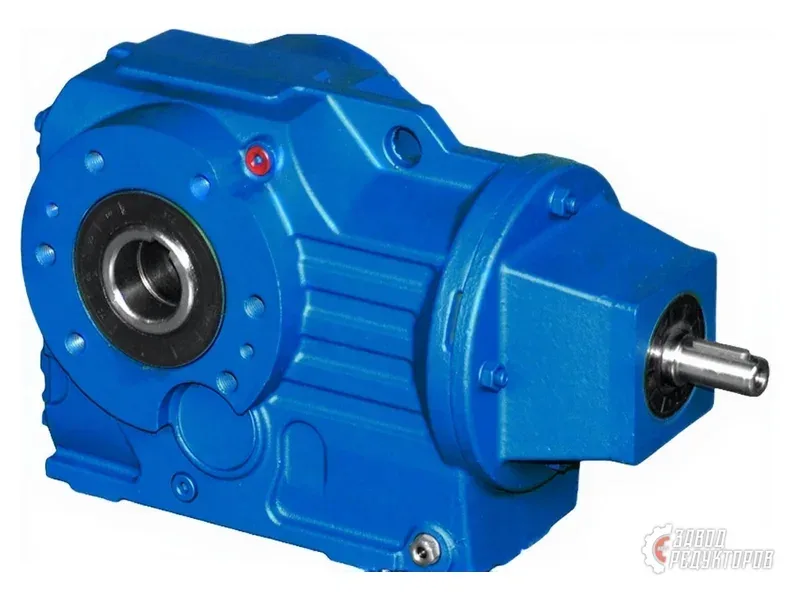
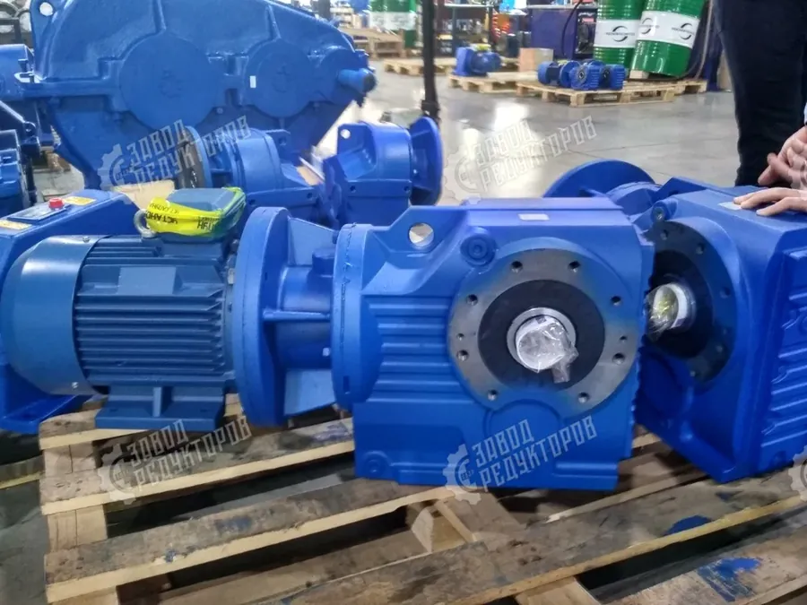

После ухода Siemens и Flender с российского рынка предприятия столкнулись с задачей замены вышедших из строя приводов. Подобрать аналог Flender реально, если разобраться, к какой серии относится исходный редуктор и какой наш тип соответствует ему по кинематике, моменту и присоединительным размерам. Разберём серии Flender и наши соответствия по типам.
Flender (часть Siemens) — один из крупнейших мировых производителей промышленных редукторов и мотор-редукторов. На наших предприятиях чаще всего встречаются три семейства, описание которых есть на странице бренда Flender:
Чтобы подобрать аналог Flender, сначала определяют, к какому из этих семейств относится ваш привод — по шильдику, обозначению и форме корпуса.

Замена Flender строится не «по названию модели», а по типу передачи и расположению валов. Вот как серии Flender соотносятся с нашими типами:
Сводная таблица перекрёстного подбора по семействам:
| Серия Flender | Наш тип |
|---|---|
| MOTOX (мотор-редукторы) | Мотор-редукторы по типам: цилиндрические, коническо-цилиндрические, червячные |
| H (промышленные, гориз.) | Цилиндрические редукторы (параллельные валы) |
| B (промышленные, высокий момент) | Коническо-цилиндрические редукторы (валы 90°) |
| Cavex (червячные) | Червячные редукторы с самоторможением |

Чтобы аналог Flender встал на место исходного редуктора и отработал ресурс, проверяют несколько групп параметров:
При несовпадении присоединительных размеров изготавливают переходный фланец или спецвал, чтобы поставить замену Flender без переделки рамы. Подробнее об этом — на странице импортозамещения.
Помимо общего деления на семейства, при подборе аналога полезно ориентироваться на конкретные подсерии и их типовые параметры. Серия SIP — это стандартные промышленные редукторы Flender (бывшая линейка SIG/SIP) с широким диапазоном моментов, а MOTOX охватывает мотор-редукторы в сборе с двигателем. Ниже — сводка типовых подсерий с диапазоном передаточных чисел и нашими соответствиями по кинематике:
| Подсерия Flender | Тип передачи | Передат. число i | Наш аналог по типу |
|---|---|---|---|
| MOTOX E | Цилиндрическая, соосная | 1,3–290 | Соосные мотор-редукторы |
| MOTOX Z/D | Цилиндрическая, парал. валы | 3,6–450 | Цилиндрические мотор-редукторы |
| MOTOX B/K | Коническо-цилиндрическая (90°) | 5,4–400 | Коническо-цилиндрические мотор-редукторы |
| MOTOX C/S | Червячная | 4–3500 | Червячные мотор-редукторы с самоторможением |
| SIP H..H | Цилиндр., 2–3 ступени, гориз. | 6,3–450 | Цилиндрические редукторы (раздельный корпус) |
| SIP B..H | Коническо-цилиндрическая | 6,3–400 | Коническо-цилиндрические редукторы |
| Cavex SC | Червячная (вогнутый профиль) | 5–100 | Червячные редукторы |
Если конструкция критична к точному соответствию или требуется сохранить оригинальный привод, возможна поставка оригинального редуктора Flender под заказ. Это дольше, чем отгрузка отечественного аналога со склада или производства, но иногда оправдано для ответственных узлов. Условия поставки и сроки уточняются индивидуально — см. раздел импортозамещения и поставки импортных приводов.
Важно понимать, что отечественный аналог Flender редко повторяет оригинал буквально по габаритам и обозначению — да это и не требуется. Российские и немецкие производители используют разные стандартные ряды передаточных чисел, типоразмеров корпусов и присоединительных размеров. Поэтому грамотная замена строится по принципу функционального соответствия: аналог должен обеспечить тот же крутящий момент с нужным сервис-фактором, те же обороты на выходном валу и ту же кинематику передачи, а расхождения в посадочных размерах закрываются переходными деталями. Такой подход надёжнее слепого поиска «точной копии», которой у отечественного ряда может попросту не быть.
Отдельного внимания заслуживает сервис-фактор: у тяжёлых серий Flender H/B он закладывается с большим запасом под ударные нагрузки, реверсы и частые пуски в металлургии и горном деле. При подборе аналога этот запас обязательно воспроизводят, иначе формально совпадающий по номинальному моменту редуктор не выдержит реальный режим и выработает ресурс досрочно. Поэтому в заявке полезно указывать не только тип машины и обозначение Flender, но и характер нагрузки, число пусков в час и режим работы — это позволяет инженеру подобрать аналог с верным запасом, а не только с подходящей кинематикой.
Подбор аналога Flender — это определение серии (MOTOX, H/B, Cavex), сопоставление с нашим типом редуктора и проверка кинематики, момента и присоединительных размеров. Пришлите фото шильдика и обозначение Flender — инженер Завода Редукторов определит семейство, подберёт соответствие по таблице выше и при необходимости предложит поставку оригинала под заказ.
Ищете аналог Flender или замену мотор-редуктору MOTOX? Завод Редукторов подбирает отечественные аналоги Flender по сериям MOTOX, SIP, H/B и Cavex — по кинематике, моменту и присоединительным размерам, а при необходимости поставляет оригинал Flender под заказ.
Промышленные редукторы Flender отличаются высоким моментом и раздельным корпусом, поэтому аналог подбирают по типу передачи, расположению валов и межосевому расстоянию, а не по названию модели. Соосные и параллельные MOTOX заменяются нашими цилиндрическими и коническо-цилиндрическими мотор-редукторами, серии H и B — редукторами в разъёмном чугунном корпусе, а червячные Cavex — червячными редукторами с самоторможением и КПД 0,7–0,9.
При несовпадении лап, фланца или концов валов закладывается переходный фланец или спецвал — штатное решение при замене импортного привода Flender. Подбор аналога Flender ведут по передаточному числу из стандартного ряда и крутящему моменту с сервис-фактором не ниже 1,4; цену по конкретной модели MOTOX или Cavex присылаем по запросу.
| Серия Flender | Тип → наш аналог |
|---|---|
| MOTOX (соосный) | Цилиндрический мотор-редуктор → ZR-Ц |
| MOTOX-K | Коническо-цилиндрический → ZR-КЦ |
| H / B | Промышленный в раздельном корпусе → Ц2/Ц3 |
| SIP | Планетарный / цилиндрический → ZR-П |
| Cavex | Червячный, двойной охват → ZR-Ч |
| Передаточное число i | 1,25–450 (по серии) |
|---|---|
| Момент на выходе M2 | до 90 000 Н·м (промышл. серии) |
| Сервис-фактор fB | от 1,4 (по режиму нагрузки) |
| Монтаж | лапы, фланец, на полый вал |
| Смазка | минеральное / синтетическое CLP |
| Цена и срок | по запросу, от 3 дней |
Замена редуктора Flender и подбор аналога MOTOX востребованы после ухода Siemens и Flender с рынка: вышедший из строя импортный привод нужно менять без переделки рамы и фундамента. Аналог Flender подбирают не по названию модели, а по типу передачи, расположению валов, передаточному числу из стандартного ряда и крутящему моменту с сервис-фактором. Мотор-редукторы MOTOX заменяются нашими цилиндрическими, коническо-цилиндрическими и червячными мотор-редукторами, промышленные серии SIP и H/B — редукторами в раздельном корпусе, а червячные Cavex — нашими червячными редукторами с самоторможением.
При несовпадении лап, фланца или концов валов изготавливают переходный фланец или спецвал — это штатное решение при импортозамещении приводов. Подробнее о замене импортных редукторов и поставке оригиналов под заказ читайте на странице импортозамещения, а быстро подобрать аналог Flender по параметрам можно через страницу подбора редуктора.
Серию определяют по шильдику, буквенно-цифровому обозначению и форме корпуса. Мотор-редукторы в сборе с двигателем — это MOTOX, тяжёлые промышленные в раздельном корпусе — H/B, червячные с вогнутым профилем зуба — Cavex. Если уверенности нет, пришлите фото шильдика и общего вида с замерами через страницу подбора — инженер определит семейство.
Да, подбор строится не «по названию модели», а по типу передачи, расположению валов, передаточному числу и моменту. Достаточно замерить присоединительные размеры, концы валов и определить кинематику. По этим данным мы подберём соответствующий тип редуктора из нашего ряда.
MOTOX заменяется нашими цилиндрическими и коническо-цилиндрическими мотор-редукторами — по типу передачи и расположению вала двигателя. Червячные исполнения MOTOX меняются на наши червячные редукторы. Главное — совпадение кинематики, момента и присоединительных размеров.
При несовпадении лап, фланца или концов валов изготавливают переходный фланец или спецвал, чтобы поставить замену без переделки рамы и фундамента. Это штатное решение при импортозамещении приводов — подробнее на странице импортозамещения.
Проверяют пять групп: кинематику и тип передачи (расположение валов), передаточное число из стандартного ряда, крутящий момент с сервис-фактором, присоединительные размеры и исполнение монтажа. Совпадение этих параметров гарантирует, что аналог встанет на место и отработает ресурс.
Да, если конструкция критична к точному соответствию, возможна поставка оригинального редуктора Flender под заказ. Это дольше отгрузки отечественного аналога, но иногда оправдано для ответственных узлов. Сроки и условия уточняются индивидуально — см. раздел импортозамещения и поставки импортных приводов.
Пришлите обозначение Flender, шильд или фото редуктора — определим серию и подберём замену.
Оставить заявку